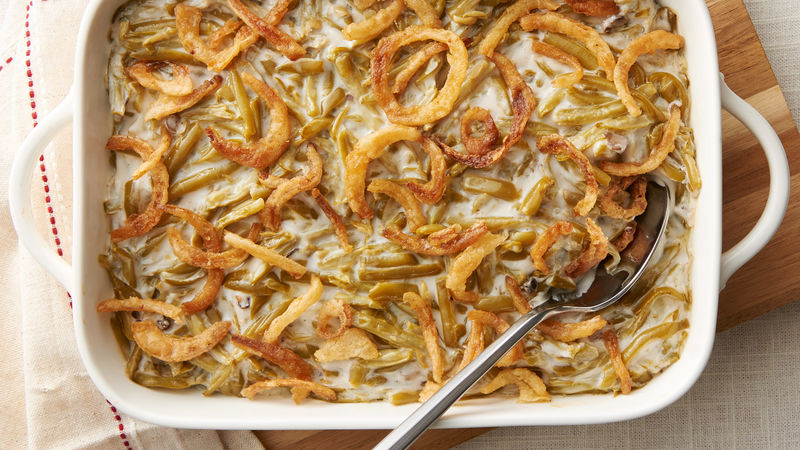

Green Bean Casserole

Description
A variation of an all-time classic. Green bean casserole makes for a delightful and comforting side-dish to many holiday meals.
This version of green bean casserole replaces the cream of mushroom soup with cream of chicken and includes a few easy hacks to avoid the finished product becoming too watery.
Ingredients
- 1 can (10.5 oz) Campbell's© Cream of Chicken Soup
- 3/4 cup milk
- 1/4 teaspoon ground black pepper
- 2 cans (14.5 oz ea.) french cut green beans
- 1.5 cups French's© Original Crispty Fried Onions
- Preheat oven to 350°F
- Drain water from green beans
- In medium casserole dish: mix half of fried onions plus full amount of soup/milk/pepper/green beans
- Cover and cook for 30 minutes
- Stir casserole, top with remaining half of fried onions
- Cook uncovered for 5 minutes or until fried onions are golden brown